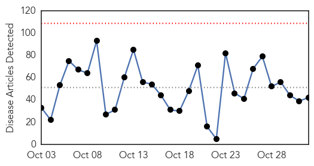
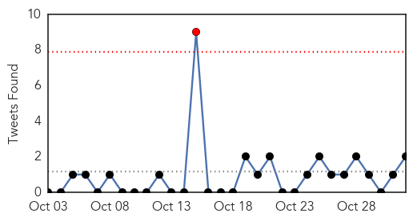
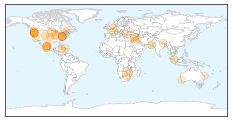
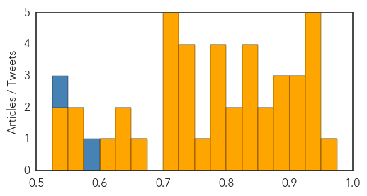
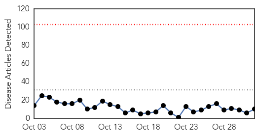
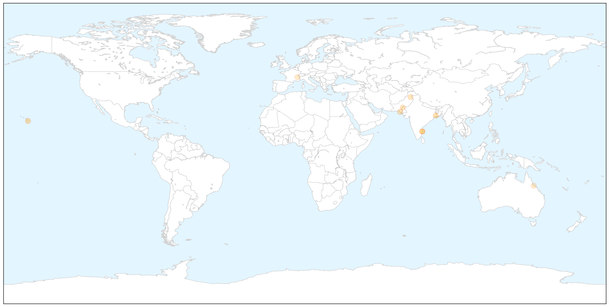

Unknown
30-Day Web Trend
0 alerts, 0 warnings

30-Day Twitter Trend
1 alerts, 0 warnings

Article Locations

Article Confidences
Top Articles:
- 0.951
- "Water on the knee" could be early sign of Lyme disease
- 0.944
- Chipotle E. Coli Prompt Restaurant Closings In Two States
- 0.944
- Greater likelihood of brain-eating amoeba in Islamabad
- 0.939
- Chipotle Temporarily Closes 43 Locations After E. coli Scare
- 0.932
- Chipotle E. Coli Outbreak Sickens more than 40 People in 2 States
- 0.927
- Chipotle locations in WA, OR shuttered amid E.Coli fears
- 0.917
- Chicago Tribune
- 0.907
- Oregon, Washington probe E. coli cases linked to Chipotle
- 0.905
- Oregon, Washington probe E. coli cases linked to Chipotle
- 0.898
- Martin Henry: Hospital infections - beyond the fury
- 0.884
- Chipotle Shuts Restaurants in Seattle, Portland on Health Risk
- 0.878
- Ore., Wash Chipotles Close After E. coli Sickens 22
- 0.864
- Indiana health officials report surge in syphilis cases
- 0.860
- Chipotle closes 43 NW restaurants amid E. Coli outbreak
- 0.847
- Chipotle Closes 43 Stores in Washington, Oregon amid E. coli Investigation
- 0.847
- Thousands vaccinated at free flu clinic
- 0.847
- Cruise Law News
- 0.832
- Boise, Meridian, Nampa, Caldwell, Idaho News, Weather, Sports and Breaking News - KBOI 2
- 0.814
- Parts of southern Africa are within tantalising reach of eliminating malaria
- 0.802
- All Chipotle Restaurants In Oregon And Washington Closed Amid Suspected E. Coli Outbreak
- 0.798
- More than 40 Chipotle Restaurants Closed Across Oregon and Washington State
- 0.794
- Chipotle closes dozens of locations
- 0.792
- No 'smoking gun' in Shigella outbreak
- 0.777
- Hospitals step up measures to curb ‘superbug’ that spreads via touch
- 0.751
- Thousands vaccinated at free flu clinic
- 0.748
- Chipotle Mexican Grill Closes 43 Stores Due To E. Coli Outbreak
- 0.746
- Chipotle cooperates with health officials during E. coli investi
- 0.733
- What Caused the Chipotle E. Coli Outbreak in Washington and Oregon?
- 0.730
- Top French weatherman 'sacked' over climate change book
- 0.707
- Turkey’s AKP sweeps polls to regain majority in stunning comeback
- 0.706
- Advanced Chiropractic Wellness Center Helps Patients Build Natural Defenses Against Colds and Flu
- 0.705
- Divided Turkey holds snap election amid security, economic fears
- 0.705
- Thousands march as death toll in Romania disco fire rises
- 0.704
- Updated Information Regarding Ongoing Mariscos San Juan #3 Shigella Outbreak
- 0.650
- Annual flu shot campaign gets underway in Quebec
- 0.646
- Shortage of drugs hits patients in several districts
- 0.644
- Worst syphilis outbreak in 30 years sparks concern across northern Australia
- 0.602
- Killer flesh-eating bug a risk to many
- 0.567
- Vermonters encouraged to be part of #VaxWithMe selfie campaign
- 0.566
- You're fired! UN workers dismissed over child porn, drugs
- 0.549
- Mat North scores first in HIV/Aids treatment
- 0.539
- Zimbabwe Education System Improves
Top Tweets:
- 0.578
- The Saudi health ministry hasn't updated their English MERS site since Friday. The Arabic site reports no new cases since then but 1 death.
- 0.528
- As the of flu cases slowly decline down under tweet us your tips and learnings from this years flu season
Dengue Fever
30-Day Web Trend
0 alerts, 0 warnings

30-Day Twitter Trend
7 alerts, 0 warnings

Article Locations

X

Article Confidences

Top Articles:
- 0.997
- State View: The case of dengue management and its can of worms: The Hindu
- 0.924
- Dengue shock after festival slackness
- 0.890
- Health officials confirm 2 cases of dengue fever
- 0.813
- Flow of dengue patients continues unabated despite fall in temperature
- 0.762
- Mismanaged, short-staffed : Hassanabdal Tehsil Headquarters Hospital in a shambles
- 0.758
- CDA director health’s anti-dengue efforts recognised
- 0.659
- Doctors urge climate action
- 0.651
- Climate deal more important for your health than you realise – WHO
- 0.635
- Minister Holds Field Inspection on Jaya's Order
- 0.526
- At least 20 dengue cases every day in Perak this year
Top Tweets:
-
No tweets found for Nov 01, 2015